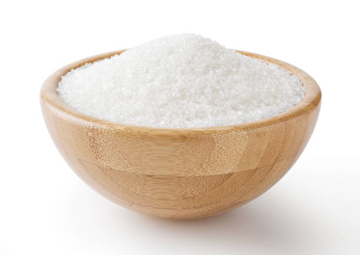
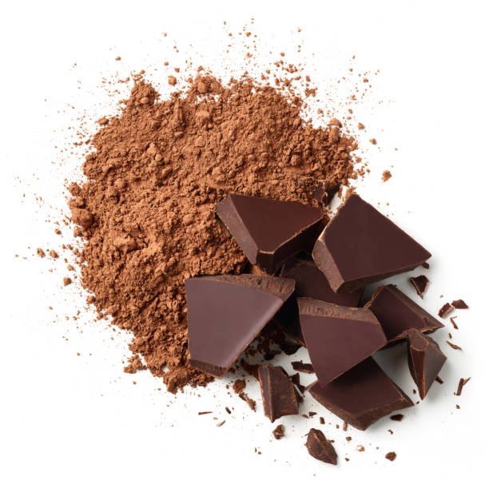
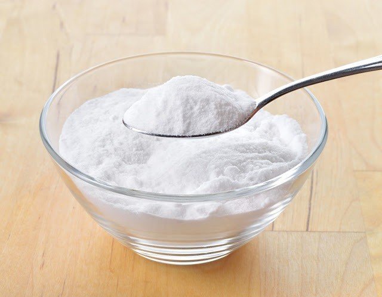
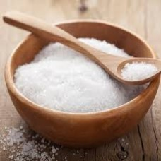
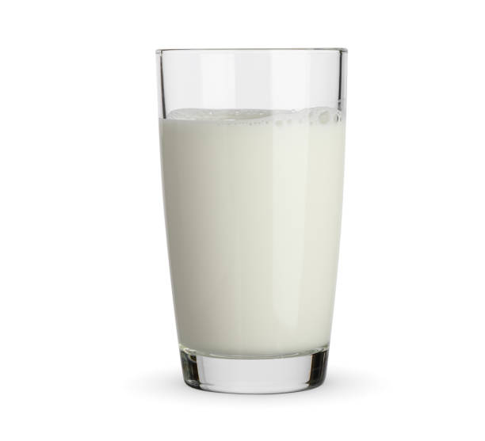
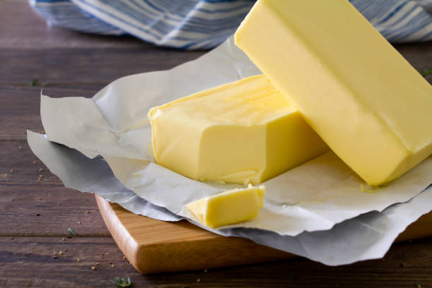

A Receita Clássica de Bolo de Chocolate
A sobremesa clássica e deliciosa que é a verdadeira paixão Nacional!!
Feito com massa macia, úmida e intensamente chocolatuda, esse bolo conquista pelo sabor e pela simplicidade. Geralmente leva achocolatado, cacau em pó ou um chocolate em barra derretido na massa e é coberto com uma generosa camada de calda de chocolate cremosa, que escorre pelas laterais e forma aquela casquinha irresistível por cima.Pode ser servido simples ou recheado com brigadeiro, doce de leite ou até morango. Vai bem tanto no café da manhã quanto como sobremesa depois do almoço. É o tipo de bolo que remete à infância, às festas de aniversário e aos encontros em família.
Ingrediente
| Imagens |
Quantidades |
|
3 Ovos |
|  |
1 e 1/2 xícara (chá) de Açúcar |
 |
2 xícaras (chá) de farinha de trigo |
|  |
1 xícara (chá) de chocolate em pó ou achocolatado |
|
1/2 xícara (chá) de óleo |
|  |
1 colher (sopa) de fermento em pó |
|  |
1 pitada de sal |
|
1 xícara (chá) de água quente |
Cobertura
| Imagens |
Quantidades |
 |
4 colheres (sopa) de leite |
|
1/2 xícara (chá) de chocolate em pó |
 |
1 colher (sopa) de manteiga |
|
1 xícara (chá) de açúcar |
Utensílios
Modo de preparo
Massa
Modo de preparo:10min, Preparo:40min
- Em um liquidificador, bata os ovos, o açúcar, o óleo, o achocolatado e a farinha de trigo.
- Despeje a massa em uma tigela e adicione a água quente e o fermento, misturando bem.
- Despeje a massa em uma forma untada e asse em forno médio-alto (200° C), preaquecido, por 40 minutos.
- Desenforme ainda quente.
Cobertura
- Em uma panela, leve todos os ingredientes ao fogo até levantar fervura.
- Despeje ainda quente em cima do bolo.